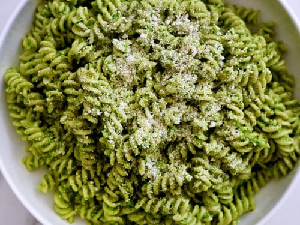

Broccoli Pesto Pasta Recipe

Description
Broccoli florets that are whizzed right into the pesto sauce itself, adding an even more vibrant punch of emerald green to the sauce as well as a serious nutritional boost. In addition to being a great source of fiber, this dark green member of the brassica family boasts lots of vitamin C and vitamin A, as well as some iron, calcium and potassium. Blended into a classic pesto along with some of the pasta cooking water, broccoli gives this pesto sauce just a bit of creaminess and a lot more oomph.
Ingredients
- 1 lb cooked pasta of your choice, pasta water reserved
- 4 cups broccoli florets
- 2 cups basil leaves, lightly packed
- 2 garlic cloves
- ¼ cup pine nuts
- 1 cup extra virgin olive oil
- ½ tsp salt
- 1 cup Parmigiano-Reggiano, grated
Method
- In a large pot bring water ** to a rapid boil.
- Add the broccoli, bring the water back up to a boil for two minutes. Do not drain the water! Immediately transfer broccoli (with a slotted spoon) to a colander place under cold running water to stop further cooking.
- Bring the water ** back to a boil and add your favorite pasta and cook according to the package (reserve 1 cup of pasta cooking water before draining).
- In a large blender or food processor, blend together broccoli, basil, garlic, pine nuts, olive oil, salt and Parmigiano-Reggiano until smooth. Slowly pour in 1 cup of reserved pasta water until a nice sauce is formed. If sauce is too thick, add more pasta water one tablespoon at a time.
- Toss hot pasta with sauce until completely coated. Top with extra Parmesan, pine nuts and chili flakes if desired. Enjoy!
Return to top
Return to main page